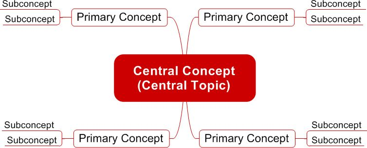
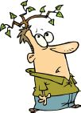

This chapter teaches you how to visually map, which is an important tool used in CLM. Skip to Chapter 3 if you’re already familiar with visual mapping.
Universally acknowledged as a very powerful learning tool, visual mapping — diagramming of ideas and concepts — was first developed by Tony Buzan in the 1970s. By using visual maps, you can better and more quickly capture, consolidate, organize, and analyze information and knowledge, and enhance your ability to understand subjects, solve problems, and learn. Once you open your mind to visual mapping, you’ll see that it has endless applications.
Visual mapping is known by many other names, most notably Mind Mapping,® but also concept mapping, flow-charting, visual thinking, spider diagramming, memory mapping, semantic mapping, and thought webbing.* Regardless of what you call it, the basic principles are the same.
A visual map is a graphic tool used to collect, create, manage, and exchange information. It represents information via the spatial organization of concepts/topics, ideas, words, or other items linked to and arranged in a radial pattern around a central concept (see diagram).


Think of it as a tree, where the various outlying branches — the subconcepts — all connect back to the trunk or central concept. The elements of a given visual map are arranged intuitively according to the importance of the concepts, with the goal of representing accurate and meaningful connections among them. The concepts are typically represented in a hierarchical fashion with the most general (inclusive) concepts closer to the central concept and the less general (more exclusive or specific) concepts placed further away from the central concept.
For example, if you wanted to compose a visual map representing your life (see diagram), your central concept would be you, and some primary concepts related to your central concept would be personal life, school, work, and extracurricular activities. You can further develop your visual map by adding more branches (subconcepts) to these four primary concepts. As you can see, a visual map adds structure and organization to random thoughts and dispersed content, making the information easier to remember and use.